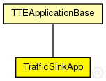

This documentation is released under the Creative Commons license
This documentation is released under the Creative Commons licenseTraffic sink application used for statistics collection.
See also: TTEApplicationBase
Author: Till Steinbach
The following diagram shows usage relationships between types. Unresolved types are missing from the diagram. Click here to see the full picture.
The following diagram shows inheritance relationships for this type. Unresolved types are missing from the diagram. Click here to see the full picture.
| Name | Type | Description |
|---|---|---|
| TTEApplicationBase | simple module |
Abstract base application used for various application models. Since this is an abstract module please do not instantiate it |
| Name | Type | Default value | Description |
|---|---|---|---|
| buffers | string | "" |
Comma seperated list of buffer modules the application is allowed to use |
| buffers_manual | bool | false |
If true, buffer management is not used. Applications use their own methods to locate buffers |
| Name | Value | Description |
|---|---|---|
| class | TrafficSinkApp | |
| display | i=block/sink |
| Name | Direction | Size | Description |
|---|---|---|---|
| TTin | input |
Input gate for the incoming time-triggered messages |
|
| RCin | input |
Input gate for the incoming rate-constrained messages |
|
| schedulerIn | input |
Input gate for the incoming SchedulerActionTimeEvent messages |
|
| syncIn | input |
Input gate for the incoming SynchronizationNotification messages |
| Name | Title | Source | Record | Unit | Interpolation Mode |
|---|---|---|---|---|---|
| latency | End-to-end latency | stats, histogram, vector | s | ||
| rxPk | RX Packets | count, vector |
// // Traffic sink application used for statistics collection. // // @see TTEApplicationBase // // @author Till Steinbach simple TrafficSinkApp extends TTEApplicationBase { parameters: @class(TrafficSinkApp); @display("i=block/sink"); //Statistic of the amount of packets that were received by the application @statistic[rxPk](title="RX Packets"; record=count,vector); //End-to-end latency //Uses encapsulated packet or frame when nothing is encapsulated @statistic[latency](title="End-to-end latency"; unit=s; record=stats,histogram,vector); }
This documentation is released under the Creative Commons license